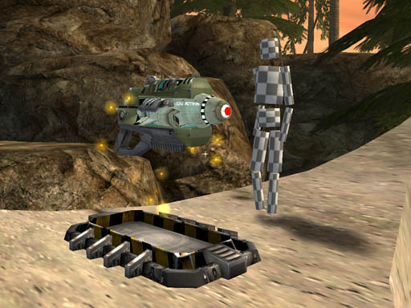
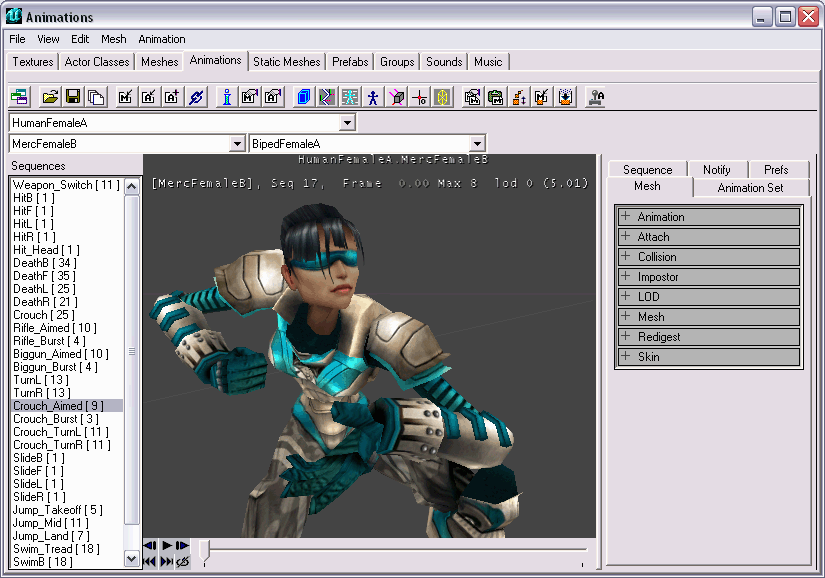

Maya PLE Character Model Tutorial
10/15/03. With Maya 5 Personal Learning Edition now available for download from Alias, it's necessary to say that this tutorial is written for use with Maya 4.0.1 PLE, that shipped with the UT2003 release CDs. Maya 5 PLE does not support the unEditor.mll plug-in that shipped with UT2003/Maya 4 PLE.
03/08/05. Belated update: UT2004 shipped with a new version of unEditor.mll for Maya 5 PLE that sports a spiffy new interface and new features.
Check the UDN site
MayaCompletePlugins for the latest version, which fixes a bug affecting collision geometry exports.
From Maya PLE to Antalus in 101 Steps
Maya PLE 4.0.1 and the associated plug-in unEditor.mll shipped with UT2003, and the combination was touted as "the kind of integrated 3D pipeline used by top game developers."
Well, sort of. The limitations of the Personal Learning Edition, while quite understandable, present a number of roadblocks to easily getting a character model into UT2003, particularly when it comes to skinning the model. But it is possible, and can be quite successful.
Overview
This first in a series of planned tutorials about character modeling for Unreal-engine-based mods focuses on the "mechanical" steps of creating a Maya PLE model using skeletal animation, and getting it into UT2003.
The tutorial has five parts:
Unfortunately, an exhaustive explanation of modeling, rigging, skinning, animating, exporting, and tweaking a fully-developed UT2003 character equivalent to Wraith, Gorge, Cobalt or Satin is far beyond the scope of this "elementary" tutorial – there are just too many details, and it would necessarily assume a great deal of pre-existing skill and knowledge.
Instead, I'll outline the steps to get a very simplified skeletal animation built, rigged, textured, exported and ready to select as a UT2003 character. The result will be a character pretty much unplayable in the game (except for laughs, perhaps), but the critical steps will have been covered, and you will have a procedure to expand on as you develop a more capable character model of your own design.

TinCanMan, product of this tutorial, contemplates a superweapon on Antalus |
This tutorial will NOT teach you how to be a good modeler or animator or skinner. Those parts of the learning curve you'll have to navigate on your own (or wait for future tutorials).
Familiarity and facility with the Maya PLE interface is highly recommended. Menu operations or tools important to the specific steps are usually highlighted in boldface, but it's assumed that you can manage the more general operations (like renaming objects, entering Channel Box values, etc.) without detailed explanation.
Preparation
A valuable first step in planning a character model is to find out what the game expects. For normal gameplay, the UT2003 characters have a fully defined set of animations the game plays under various circumstances. The animation sequences for any UT2003 character can be viewed in the Animations browser (FIG 1).

FIG 1. The UEd Animations browser |
The list is extensive, and the game engine expects any character to have them all. However, not having them all doesn't break the game, it just generates a lot of warnings in the UT2003 log. While this is undesirable for a properly functional character, for the tutorial model it will be par for the course.
Better news is that the animated motions displayed by playing the sequences in the browser are of no consequence to the game engine. Only the sequence names are relevant – the same animation created in Maya PLE could be given a number of different sequence names in UT2003, and the engine would play it accordingly. This isn't very useful, but it is instructive.
Enough verbiage, time to start Modeling !
Discussion
Corran: Should the tutorial pages not be sub-pages? It would make it all fit together much better methinks.
Chip: The tute is pretty linear & sequential, broken into sections/pages to keep each a bit more manageable. Most subpages I've seen deal with associated subjects, rather than a direct continuance of their main pages. Would the additional visibility of the sections, and their links, from using subpages be valuable if each isn't really "standalone"?
Corran: Each of the five tutorial pages are currently not part of this page except through links. If they were sub-pages, it would make it more clear that they are part of the the same subject (like a directory holding five chapters of a tutorial). It would be like the Mod Authoring page, with the sub-pages being parts of the whole tutorial. Also, they'd show up together, as sub-pages on the search page.
SuperApe: I believe this page setup is okay. Instead of linking from Mod Authoring, which was created as a stand-alone guide, I linked from Making Mods, which will probably become a hub for all Modding Topics at some point. Excellent tutorial by the way. The only thing that was missing for me was proper and more detailed UV mapping for character models, but that can be found elsewhere, I'm sure.
Winxprules: Uh-oh... I went to install Maya off the UT2004 DVD today (9th Feb '06) and went to get an activation code. BUT - Maya doesn't supply codes for version 5.0 anymore! Not only that, but the UT2004 plug-in included with the game doesn't work with Maya 7.0, the latest version available. Problem? I think so... people have discussed this on BUF already, so if you want more information, try a search there.
Offramp: The activation codes for Maya PLE 4.0, 4.5 and 5.0 are still available (http://www.alias.com/eng/login/enquiries/ple_unlock_m50/index.html). The UT export plug-in for Maya PLE 7.0 can be found on the UDN pages (http://udn.epicgames.com/Two/MayaCompletePlugins).